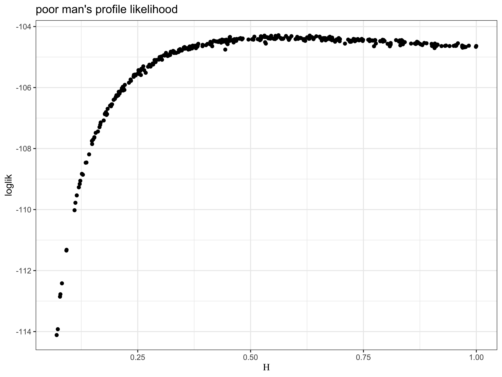
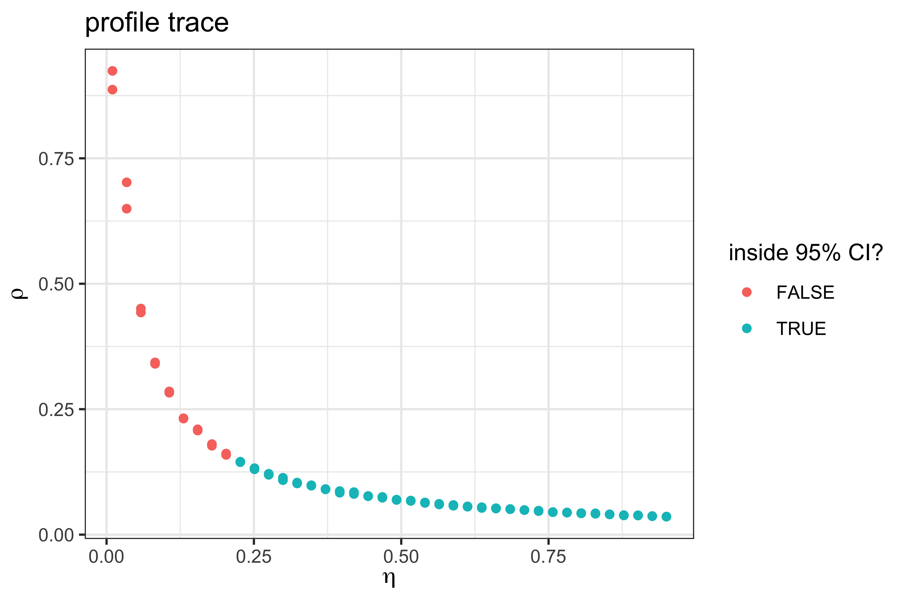

source("model_measSIR.R")Lesson 4: Iterated filtering: principles and practice
Introduction
Introduction
- This tutorial covers likelihood estimation via the method of iterated filtering.
- It presupposes familiarity with building partially observed Markov process (POMP) objects in the
Rpackage pomp (King, Nguyen, and Ionides 2016). - This tutorial follows on from the topic of particle filtering (also known as sequential Monte Carlo) via
pfilterin pomp.
Objectives
- To review the available options for inference on POMP models, to put iterated filtering in context.
- To understand how iterated filtering algorithms carry out repeated particle filtering operations, with randomly perturbed parameter values, in order to maximize the likelihood.
- To gain experience carrying out statistical investigations using iterated filtering in a relatively simple situation: fitting an SIR model to data from a measles outbreak.
Classification of statistical methods for POMP models
Classification of statistical methods for POMP models
Many, many statistical methods have been proposed for inference on POMP models King, Nguyen, and Ionides (2016).
The volume of research indicates both the importance and the difficulty of the problem.
Let’s start by considering three criteria to categorize inference methods:
- the plug-and-play property
- full-information or feature-based
- frequentist or Bayesian
The plug-and-play property
Plug-and-play (also called simulation-based) methods
- Inference methodology that calls
rprocessbut notdprocessis said to be plug-and-play. All popular modern Monte Carlo methods for POMP models are in this category. - “Simulation-based” is equivalent to “plug-and-play”.
- Historically, simulation-based meant simulating forward from initial conditions to the end of the time series.
- However, particle filtering methods instead consider each observation interval sequentially. They carry out multiple, carefully selected, simulations over each interval.
- Plug-and-play methods can call
dmeasure. A method that uses onlyrprocessandrmeasureis called “doubly plug-and-play”. - Two non-plug-and-play methods—expectation-maximization (EM) and Markov chain Monte Carlo (MCMC)—have theoretical convergence problems for nonlinear POMP models. The failures of these two workhorses of statistical computation have prompted development of alternative methodologies.
Full information vs.~feature-based methods
Full-information and feature-based methods
- Full-information methods are defined to be those based on the likelihood function for the full data (i.e., likelihood-based frequentist inference and Bayesian inference).
- Feature-based methods either consider a summary statistic (a function of the data) or work with an an alternative to the likelihood.
- Asymptotically, full-information methods are statistically efficient and feature-based methods are not.
- In some cases, loss of statistical efficiency might be an acceptable tradeoff for advantages in computational efficiency.
However:
- Good low-dimensional summary statistics can be hard to find.
- When using statistically inefficient methods, it can be hard to know how much information you are losing.
- Intuition and scientific reasoning can be inadequate tools to derive informative low-dimensional summary statistics (Shrestha, King, and Rohani 2011, Ionides2011a).
Bayesian vs.~frequentist approaches
Bayesian and frequentist methods
Recently, plug-and-play Bayesian methods have been discovered:
- particle Markov chain Monte Carlo (PMCMC) (Andrieu, Doucet, and Holenstein 2010).
- approximate Bayesian computation (ABC) (Toni et al. 2009).
Prior belief specification is both the strength and weakness of Bayesian methodology:
The likelihood surface for nonlinear POMP models often contains nonlinear ridges and variations in curvature.
- These situations bring into question the appropriateness of independent priors derived from expert opinion on marginal distributions of parameters.
- They also are problematic for specification of “flat” or “uninformative” prior beliefs.
- Expert opinion can be treated as data for non-Bayesian analysis. However, our primary task is to identify the information in the data under investigation, so it can be helpful to use methods that do not force us to make our conclusions dependent on quantification of prior beliefs.
Summary
Iterated filtering in theory
Full-information, plug-and-play, frequentist methods
- Iterated filtering methods Edward L. Ionides et al. (2015) are the only currently available, full-information, plug-and-play, frequentist methods for POMP models.
- Iterated filtering methods have been shown to solve likelihood-based inference problems for epidemiological situations which are computationally intractable for available Bayesian methodology (Edward L. Ionides et al. 2015).
An iterated filtering algorithm (IF2)
We focus on the IF2 algorithm of Edward L. Ionides et al. (2015). In this algorithm:
- Each iteration consists of a particle filter, carried out with the parameter vector, for each particle, doing a random walk.
- At the end of the time series, the collection of parameter vectors is recycled as starting parameters for the next iteration.
- The random-walk variance decreases at each iteration.
In theory, this procedure converges toward the region of parameter space maximizing the maximum likelihood.
In practice, we can test this claim on examples.
IF2 algorithm pseudocode
Input:
- simulators for \(f_{X_0}(x_0;\theta)\) and \(f_{X_n|X_{n-1}}(x_n| x_{n-1}; \theta)\)\
- evaluator for \(f_{Y_n|X_n}(y_n| x_n;\theta)\)\
- data, \(y^*_{1:N}\)\
- number of iterations, {mif = }\(M\)\
- number of particles, {p = }\(J\)\
- initial parameter swarm, {arams = }\(\{\Theta^0_j, j=1,\dots,J\}\)\
- random walk standard deviation for each parameter, {w.sd}, squared to construct a diagonal variance matrix, \(V_n\)\
- cooling fraction in 50 iterations, \(a\)\
Output:
- final parameter swarm, \(\{\Theta^M_j, j=1,\dots,J\}\)\
Procedure:
- For \(m\) in \(1{:}M\)
- \(\qquad\) \(\Theta^{F,m}_{0,j}\sim \normal\big(\Theta^{m-1}_{j},V_0 \, a^{2m/50}\big)\) for \(j\) in \(1{:} J\)
- \(\qquad\) \(X_{0,j}^{F,m}\sim f_{X_0}(x_0 ; \Theta^{F,m}_{0,j})\) for \(j\) in \(1{:} J\)
- \(\qquad\) For \(n\) in \(1{:} N\)
- \(\qquad\qquad\) \(\Theta^{P,m}_{n,j}\sim \normal\big(\Theta^{F,m}_{n-1,j},V_n \, a^{2m/50}\big)\) for \(j\) in \(1{:} J\)
- \(\qquad\qquad\) \(X_{n,j}^{P,m}\sim f_{X_n|X_{n-1}}(x_n | X^{F,m}_{n-1,j}; \Theta^{P,m}_{n,j})\) for \(j\) in \(1{:} J\)
- \(\qquad\qquad\) \(w_{n,j}^m = f_{Y_n|X_n}(y^*_n| X_{n,j}^{P,m} ; \Theta^{P,m}_{n,j})\) for \(j\) in \(1{:} J\)
- \(\qquad\qquad\) Draw \(k_{1{:}J}\) with \(P[k_j=i]= w_{n,i}^m\Big/\sum_{u=1}^J w_{n,u}^m\)
- \(\qquad\qquad\) \(\Theta^{F,m}_{n,j}=\Theta^{P,m}_{n,k_j}\) and \(X^{F,m}_{n,j}=X^{P,m}_{n,k_j}\) for \(j\) in \(1{:} J\)
- \(\qquad\) End For
- \(\qquad\) Set \(\Theta^{m}_{j}=\Theta^{F,m}_{N,j}\) for \(j\) in \(1{:} J\)
- End For
Remarks:
- The \(N\) loop (lines 4 through 10) is a basic particle filter applied to a model with stochastic perturbations to the parameters.
- The \(M\) loop repeats this particle filter with decreasing perturbations.
- The superscript \(F\) in \(\Theta^{F,m}_{n,j}\) and \(X^{F,m}_{n,j}\) denote solutions to the filtering problem, with the particles \(j=1,\dots,J\) providing a Monte Carlo representation of the conditional distribution at time \(n\) given data \(y^*_{1:n}\) for filtering iteration \(m\).
- The superscript \(P\) in \(\Theta^{P,m}_{n,j}\) and \(X^{P,m}_{n,j}\) denote solutions to the prediction problem, with the particles \(j=1,\dots,J\) providing a Monte Carlo representation of the conditional distribution at time \(n\) given data \(y^*_{1:n-1}\) for filtering iteration \(m\).
- The weight \(w^m_{n,j}\) gives the likelihood of the data at time \(n\) for particle \(j\) in filtering iteration \(m\).
Analogy with evolution by natural selection
- The parameters characterize the genotype.
- The swarm of particles is a population.
- The likelihood, a measure of the compatibility between the parameters and the data, is the analogue of fitness.
- Each successive observation is a new generation.
- Since particles reproduce in each generation in proportion to their likelihood, the particle filter acts like natural selection.
- The artificial perturbations augment the “genetic” variance and therefore correspond to mutation.
- IF2 increases the fitness of the population of particles.
- However, because our scientific interest focuses on the model without the artificial perturbations, we decrease the intensity of the latter with successive iterations.
Iterated filtering in practice
An example problem
Applying IF2 to the Consett measles outbreak
Let us apply IF2 to our analysis of the Consett measles outbreak we began to examine in Lessons 2 and 3.
The following loads the data, pomp, and the stochastic SIR model we constructed there.
Setting up the estimation problem
Setting up the estimation problem
Let’s assume that the population size, \(N\), is known accurately. We’ll fix that parameter.
Let’s revisit the assumption that the infectious period is 2 weeks, imagining that we have access to the results of household and clinical studies that have concluded that infected patients shed the virus for 3–4~da. We’ll use these results to constrain the infectious period in our model to 3.5~da, i.e., \(\gamma=2~\mathrm{wk}^{-1}\). We also fix \(k=10\). Later, we can relax our assumptions.
fixed_params <- c(N=38000, Gamma=2, k=10)
coef(measSIR,names(fixed_params)) <- fixed_params
coef(measSIR) Beta Gamma Rho k Eta N
1.5e+01 2.0e+00 5.0e-01 1.0e+01 6.0e-02 3.8e+04 We proceed to estimate \(\beta\), \(\eta\), and \(\rho\).
Sanity check
In Lesson 3, we have introduced how to test the codes and the particle filter from three aspects. Now we can compare the simulations with the raw data using the proposed parameters:
Parallel computing
It will be helpful to parallelize most of the computations. Lesson 3 discusses how to accomplish this using foreach.
library(foreach)
library(doFuture)
plan(multisession)Running a particle filter
We proceed to carry out replicated particle filters at an initial guess of \(\beta=15\), \(\eta=0.06\), and \(\rho=0.5\).
foreach(i=1:10,.combine=c,
.options.future=list(seed=TRUE)) %dofuture% {
measSIR |> pfilter(Np=5000)
} -> pf
pf |> logLik() |> logmeanexp(se=TRUE) -> L_pf
L_pf est se
-274.2571683 0.8639223 In 3.28 seconds, using 10 cores, we obtain an unbiased likelihood estimate of -274.3 with a Monte Carlo standard error of 0.86.
Building up a picture of the likelihood surface
- Given a model and a set of data, the likelihood surface is well defined, though it may be difficult to visualize.
- We can develop a progressively more complete picture of this surface by storing likelihood estimates whenever we compute them.
- It is a very good idea to set up a database within which to store the likelihood of every point for which we have an estimated likelihood.
- This will become larger and more complete as our parameter-space search goes on and will be a basis for a variety of explorations.
At this point, we’ve computed the likelihood at a single point. Let’s store this point, together with the estimated likelihood and our estimate of the standard error on that likelihood, in a CSV file:
pf[[1]] |> coef() |> bind_rows() |>
bind_cols(loglik=L_pf[1],loglik.se=L_pf[2]) |>
write_csv("measles_params.csv")A local search of the likelihood surface
A local search of the likelihood surface
Let’s carry out a local search using mif2 around this point in parameter space.
- We need to choose the
rw.sdandcooling.fraction.50algorithmic parameters. - Since \(\beta\) and \(\gamma\) will be estimated on the log scale, and we expect that multiplicative perturbations of these parameters will have roughly similar effects on the likelihood, we’ll use a perturbation size of \(0.02\), which we imagine will have a small but non-negligible effect.
- For simplicity, we’ll use the same perturbation size on \(\rho\).
- We fix
cooling.fraction.50=0.5, so that after 50mif2iterations, the perturbations are reduced to half their original magnitudes.
foreach(i=1:20,.combine=c,
.options.future=list(seed=482947940)
) %dofuture% {
measSIR |>
mif2(
Np=2000, Nmif=50, cooling.fraction.50=0.5,
rw.sd=rw_sd(Beta=0.02, Rho=0.02, Eta=ivp(0.02)),
partrans=parameter_trans(
log="Beta",logit=c("Rho","Eta")
),
paramnames=c("Beta","Rho","Eta")
)
} -> mifs_localWindows issues
Some Windows users have reported trouble with the above code. This appears to be due to certain Windows security features that make it impossible to compile codes inside a parallel block. We have found a workaround.
Iterated filtering diagnostics
We obtain some diagnostic plots with the plot command applied to mifs_local. Here is a way to get a prettier version:
mifs_local |>
traces() |>
melt() |>
ggplot(aes(x=iteration,y=value,group=.L1,color=factor(.L1)))+
geom_line()+
guides(color="none")+
facet_wrap(~name,scales="free_y")We see that the likelihood increases as the iterations proceed, though there is considerable variability due to
- the poorness of our starting guess and
- the stochastic nature of this Monte Carlo algorithm.
We see movement in the parameters, though variability remains.
Estimating the likelihood
Although the filtering carried out by mif2 in the final filtering iteration generates an approximation to the likelihood at the resulting point estimate, this is not good enough for reliable inference.
- Partly, this is because parameter perturbations are applied in the last filtering iteration, so that the likelihood reported by
mif2is not identical to that of the model of interest. - Partly, this is because
mif2is usually carried out with fewer particles than are needed for a good likelihood evaluation.
Therefore, we evaluate the likelihood, together with a standard error, using replicated particle filters at each point estimate.
foreach(mf=mifs_local,.combine=rbind,
.options.future=list(seed=900242057)
) %dofuture% {
evals <- replicate(10, logLik(pfilter(mf,Np=5000)))
ll <- logmeanexp(evals,se=TRUE)
mf |> coef() |> bind_rows() |>
bind_cols(loglik=ll[1],loglik.se=ll[2])
} -> resultsOn 10 processors, this local investigation took 14~sec for the maximization and 5~sec for the likelihood evaluation.
results |> filter(loglik==max(loglik))# A tibble: 1 × 8
Beta Gamma Rho k Eta N loglik loglik.se
<dbl> <dbl> <dbl> <dbl> <dbl> <dbl> <dbl> <dbl>
1 26.0 2 0.304 10 0.0904 38000 -112. 0.0630These repeated stochastic maximizations can also show us the geometry of the likelihood surface in a neighborhood of this point estimate:
pairs(~loglik+Beta+Eta+Rho,data=results,pch=16)Building up a picture of the likelihood surface
This plot shows a hint of a ridge in the likelihood surface (cf.~the \(\beta\)-\(\eta\) panel). However, the sampling is as yet too sparse to give a clear picture.
We add these newly explored points to our database,
read_csv("measles_params.csv") |>
bind_rows(results) |>
arrange(-loglik) |>
write_csv("measles_params.csv")and move on to a more thorough exploration of the likelihood surface.
Searching for the MLE
A global search
A global search of the likelihood surface
When carrying out parameter estimation for dynamic systems, we need to specify beginning values for both the dynamic system (in the state space) and the parameters (in the parameter space).
To avoid confusion, we use the term “initial values” to refer to the state of the system at \(t_0\) and “starting values” to refer to the point in parameter space at which a search is initialized.
Practical parameter estimation involves trying many starting values for the parameters.
One way to approach this is to choose a large box in parameter space that contains all remotely sensible parameter vectors.
If an estimation method gives stable conclusions with starting values drawn randomly from this box, this gives some confidence that an adequate global search has been carried out.
For our measles model, a box containing reasonable parameter values might be \(\beta\in (5,80)\), \(\rho\in (0.2,0.9)\), \(\eta\in (0,1)\).
We are now ready to carry out likelihood maximizations from diverse starting points.
set.seed(2062379496)
runif_design(
lower=c(Beta=5,Rho=0.2,Eta=0),
upper=c(Beta=80,Rho=0.9,Eta=1),
nseq=400
) -> guesses
mf1 <- mifs_local[[1]]foreach(guess=iter(guesses,"row"), .combine=rbind,
.options.future=list(seed=1270401374)
) %dofuture% {
mf1 |>
mif2(params=c(guess,fixed_params)) |>
mif2(Nmif=100) -> mf
replicate(
10,
mf |> pfilter(Np=5000) |> logLik()
) |>
logmeanexp(se=TRUE) -> ll
mf |> coef() |> bind_rows() |>
bind_cols(loglik=ll[1],loglik.se=ll[2])
} -> resultsThe above codes run one search from each of 400 starting values.
Each search consists of an initial run of 50 IF2 iterations, followed by another 100 iterations.
These codes exhibit a general pomp behavior:
- Re-running a command on an object (i.e.,
mif2onmf1) created by the same command preserves the algorithmic arguments. - In particular, running
mif2on the result of amif2computation re-runs IF2 from the endpoint of the first run. - In the second computation, by default, all algorithmic parameters are preserved; here we overrode the default choice of
Nmif.
- Re-running a command on an object (i.e.,
Following the
mif2computations, the particle filter is used to evaluate the likelihood, as before.
results |> filter(loglik==max(loglik))# A tibble: 1 × 8
Beta Rho Eta N Gamma k loglik loglik.se
<dbl> <dbl> <dbl> <dbl> <dbl> <dbl> <dbl> <dbl>
1 3.96 0.0602 0.562 38000 2 10 -104. 0.0273- In contrast to the local-search codes above, here we return only the endpoint of the search, together with the likelihood estimate and its standard error in a named vector.
- The best result of this search had a likelihood of -104.3 with a standard error of 0.03.
- This took 13.7 minutes altogether using 10 processors.
Again, we attempt to visualize the global geometry of the likelihood surface using a scatterplot matrix. In particular, here we plot both the starting values (grey) and the IF2 estimates (red).
read_csv("measles_params.csv") |>
filter(loglik>max(loglik)-50) |>
bind_rows(guesses) |>
mutate(type=if_else(is.na(loglik),"guess","result")) |>
arrange(type) -> all
pairs(~loglik+Beta+Eta+Rho, data=all, pch=16, cex=0.3,
col=ifelse(all$type=="guess",grey(0.5),"red"))- We see that optimization attempts from diverse remote starting points converge on a particular region in parameter space.
- The estimates have comparable likelihoods, despite their considerable variability.
- This gives us some confidence in our maximization procedure.
The projections of the estimates give us `poor mans profiles’’:
all |>
filter(type=="result") |>
filter(loglik>max(loglik)-10) |>
ggplot(aes(x=Eta,y=loglik))+
geom_point()+
labs(
x=expression(Eta),
title="poor man's profile likelihood"
)
Profile likelihood
Profile likelihood over \(\eta\)
- The curvature displayed in the upper envelope of the above plot suggests that there is indeed information in the data with respect to the susceptible fraction, \(\eta\).
- To solidify this evidence, let’s compute a profile likelihood over this parameter.
- Recall that this means determining, for each value of \(\eta\), the best likelihood that the model can achieve.
- To do this, we’ll first bound the uncertainty by putting a box around the highest-likelihood estimates we’ve found so far.
- Within this box, we’ll choose some random starting points, for each of several values of \(\eta\).
read_csv("measles_params.csv") |>
filter(loglik>max(loglik)-20,loglik.se<2) |>
sapply(range) -> box
box Beta Gamma Rho k Eta N
[1,] 1.824688 2 0.03405657 10 0.03628984 38000
[2,] 69.791919 2 0.60343428 10 0.99982180 38000
loglik loglik.se
[1,] -122.7423 0.01462075
[2,] -104.2847 0.56960880freeze(seed=1196696958,
profile_design(
Eta=seq(0.01,0.95,length=40),
lower=box[1,c("Beta","Rho")],
upper=box[2,c("Beta","Rho")],
nprof=15, type="runif"
)) -> guesses
plot(guesses)
- Now, we’ll start one independent sequence of iterated filtering operations from each of these points.
- We’ll be careful to keep \(\eta\) fixed.
- This is accomplished by not giving this parameter a random perturbation in the
mif2call.
foreach(guess=iter(guesses,"row"), .combine=rbind,
.options.future=list(seed=830007657)
) %dofuture% {
mf1 |>
mif2(params=c(guess,fixed_params),
rw.sd=rw_sd(Beta=0.02,Rho=0.02)) |>
mif2(Nmif=100,cooling.fraction.50=0.3) -> mf
replicate(
10,
mf |> pfilter(Np=5000) |> logLik()) |>
logmeanexp(se=TRUE) -> ll
mf |> coef() |> bind_rows() |>
bind_cols(loglik=ll[1],loglik.se=ll[2])
} -> resultsVisualizing profile likelihood
As always, we save the results in our global database and plot the results.
read_csv("measles_params.csv") |>
bind_rows(results) |>
filter(is.finite(loglik)) |>
arrange(-loglik) |>
write_csv("measles_params.csv")read_csv("measles_params.csv") |>
filter(loglik>max(loglik)-10) -> all
pairs(~loglik+Beta+Eta+Rho,data=all,pch=16)
Plotting just the results of the profile calculation reveals that, while some of the IF2 runs either become “stuck” on local minima or run out of opportunity to reach the heights of the likelihood surface, many of the runs converge on high likelihoods.
results |>
ggplot(aes(x=Eta,y=loglik))+
geom_point() + xlab(expression(eta))
A closer look shows what at first appears to be quite a flat surface over much of the explored range of \(\eta\). Note that this appearance is due to the vertical scale, which is driven by the very low likelihoods associated with the smallest values of \(\eta\).
results |>
filter(is.finite(loglik)) |>
group_by(round(Eta,5)) |>
filter(rank(-loglik)<3) |>
ungroup() |>
filter(loglik>max(loglik)-20) |>
ggplot(aes(x=Eta,y=loglik))+
geom_point() + xlab(expression(eta))Focusing on just the top of the surface shows that, in fact, one is able to estimate \(\eta\) using these data. In the following plot, the cutoff for the 95% confidence interval (CI) is shown.
maxloglik <- max(results$loglik,na.rm=TRUE)
ci.cutoff <- maxloglik-0.5*qchisq(df=1,p=0.95)
results |>
filter(is.finite(loglik)) |>
group_by(round(Eta,5)) |>
filter(rank(-loglik)<3) |>
ungroup() |>
ggplot(aes(x=Eta,y=loglik))+
geom_point() + xlab(expression(eta)) +
geom_smooth(method="loess",span=0.25)+
geom_hline(color="red",yintercept=ci.cutoff)+
lims(y=maxloglik-c(5,0))- As one varies \(\eta\) across the profile, the model compensates by adjusting the other parameters.
- It can be very instructive to understand how the model does this.
- For example, how does the reporting efficiency, \(\rho\), change as \(\eta\) is varied?
- We can plot \(\rho\) vs \(\eta\) across the profile.
- This is called a profile trace.
results |>
filter(is.finite(loglik)) |>
group_by(round(Eta,5)) |>
filter(rank(-loglik)<3) |>
ungroup() |>
mutate(in_ci=loglik>max(loglik)-1.92) |>
ggplot(aes(x=Eta,y=Rho,color=in_ci))+
geom_point()+
labs(
color="inside 95% CI?",
x=expression(eta),
y=expression(rho),
title="profile trace"
)
Profile over \(\rho\)
While the above profile trace is suggestive that the 95% CI for \(\rho\) must be between roughly 4% and 20%, to confirm this, we should construct a proper profile likelihood over \(\rho\). We do so now.
This time, we will initialize the IF2 computations at points we have already established have high likelihoods.
read_csv("measles_params.csv") |>
group_by(cut=round(Rho,2)) |>
filter(rank(-loglik)<=10) |>
ungroup() |>
arrange(-loglik) |>
select(-cut,-loglik,-loglik.se) -> guessesforeach(guess=iter(guesses,"row"), .combine=rbind,
.options.future=list(seed=2105684752)
) %dofuture% {
mf1 |>
mif2(params=guess,
rw.sd=rw_sd(Beta=0.02,Eta=ivp(0.02))) |>
mif2(Nmif=100,cooling.fraction.50=0.3) |>
mif2() -> mf
replicate(
10,
mf |> pfilter(Np=5000) |> logLik()) |>
logmeanexp(se=TRUE) -> ll
mf |> coef() |> bind_rows() |>
bind_cols(loglik=ll[1],loglik.se=ll[2])
} -> resultsProfile over \(\rho\): results

results |>
filter(loglik>max(loglik)-0.5*qchisq(df=1,p=0.95)) |>
summarize(min=min(Rho),max=max(Rho)) -> rho_ciThe data appear to be consistent with reporting efficiencies in the 3.4–16% range (95% CI).
The investigation continues.
Making predictions
Parameter estimates as model predictions
- The estimated parameters are one kind of model prediction.
- When we can estimate parameters using other data, we can test these predictions.
- In the case of a highly contagious, immunizing childhood infection such as measles, we can obtain an estimate of the reporting efficiency, \(\rho\) by simply regressing cumulative cases on cumulative births (Anderson and May 1991) over many years.
- When we do this for Consett, we see that the reporting efficiency is roughly 60%.
- Since such a value makes the outbreak data quite unlikely, the prediction does not appear to be borne out.
- We can conclude that one or more of our model assumptions is inconsistent with the data.
- Let’s revisit our assumption that the infectious period is known to be 0.5~wk.
- Indeed, it would not be surprising were we to find that the effective infectious period, at the population scale, were somewhat shorter than the clinical infectious period.
- For example, confinement of patients should reduce contact rates, and might therefore curtail the effective infectious period.
- To investigate this, we’ll relax our assumption about the value of \(\gamma\).
Searching in another direction
Another global search
We will estimate the model under the assumption that \(\rho=0.6\), but without making assumptions about the duration of the infectious period. As before, we’ll construct a random design of starting parameters.
freeze(seed=55266255,
runif_design(
lower=c(Beta=5,Gamma=0.2,Eta=0),
upper=c(Beta=80,Gamma=5,Eta=0.99),
nseq=1000
)) |>
mutate(
Rho=0.6, k=10, N=38000
) -> guesses- For each of these starting points, we’ll run a series of IF2 computations.
- Since we have gained some experience applying
mif2to this model and these data, we have some expectation about how much computation is required. - In the following, we’ll use a lot more computational power than we have so far.
For each of the starting points, we’ll first perform 100 IF2 iterations:
measSIR |>
mif2(params=guess, Np=2000, Nmif=100,
cooling.fraction.50=0.5,
partrans=parameter_trans(
log=c("Beta","Gamma"),
logit="Eta"), paramnames=c("Beta","Gamma","Eta"),
rw.sd=rw_sd(Beta=0.02,Gamma=0.02,Eta=ivp(0.02))) -> mfWe use random perturbations of the same magnitude as before, taking care to transform the parameters we are estimating.
We adopt a simulated tempering approach (following a metallurgical analogy), in which we increase the size of the random perturbations some amount (i.e., “reheat”), and then continue cooling.
mf |>
mif2(
Nmif=100,rw.sd=rw_sd(Beta=0.01,Gamma=0.01,Eta=ivp(0.01))
) |>
mif2(
Nmif=100,
rw.sd=rw_sd(Beta=0.005,Gamma=0.005,Eta=ivp(0.005))
) -> mfWe wrap the above in a foreach loop as before and take care to evaluate the likelihood at each end-point using pfilter.
See the R code for this lesson to see exactly how this is done.
The computations above required 55.8 minutes on 10 processors.
read_csv("measles_params.csv") |>
filter(loglik>max(loglik)-20) -> all
pairs(~loglik+Rho+Gamma+Beta+Eta,data=all,pch=16,cex=0.3,
col=if_else(round(all$Rho,3)==0.6,1,4))results |>
filter(loglik>max(loglik)-20,loglik.se<1) |>
ggplot(aes(x=Gamma,y=loglik))+
geom_point()+
geom_hline(
color="red",
yintercept=max(results$loglik)-0.5*qchisq(df=1,p=0.95)
)Profile over infectious period
To make inferences about \(\gamma\), we can again compute a profile likelihood. As before, we bound the region we will search:
read_csv("measles_params.csv") |>
filter(
loglik>max(loglik)-20,
loglik.se<2,
abs(Rho-0.6)<0.01
) |>
sapply(range) -> boxfreeze(seed=610408798,
profile_design(
Gamma=seq(0.2,2,by=0.1),
lower=box[1,c("Beta","Eta")],
upper=box[2,c("Beta","Eta")],
nprof=100, type="runif"
)) |>
mutate(
N=38000,
Rho=0.6,
k=10
) -> guessesforeach(guess=iter(guesses,"row"), .combine=rbind,
.options.future=list(seed=610408798)
) %dofuture% {
measSIR |>
mif2(params=guess, Np=2000, Nmif=100,
partrans=parameter_trans(log="Beta",logit="Eta"),
paramnames=c("Beta","Eta"), cooling.fraction.50=0.5,
rw.sd=rw_sd(Beta=0.02,Eta=ivp(0.02))
) |>
mif2(Nmif=100) |>
mif2(Nmif=100,rw.sd=rw_sd(Beta=0.01,Eta=ivp(0.01))) |>
mif2(Nmif=100,rw.sd=rw_sd(Beta=0.005,Eta=ivp(0.005))) -> mf
replicate(10,mf |> pfilter(Np=5000) |> logLik()) |>
logmeanexp(se=TRUE) -> ll
mf |> coef() |> bind_rows() |>
bind_cols(loglik=ll[1],loglik.se=ll[2])
} -> resultsInfectious period profile
results |>
group_by(round(Gamma,2)) |>
filter(rank(-loglik)<=1) |>
ungroup() |>
ggplot(aes(x=Gamma,y=loglik))+
geom_point() + xlab(expression(gamma)) +
geom_hline(
color="red",
yintercept=max(results$loglik)-0.5*qchisq(df=1,p=0.95)
)- This suggests that \(\rho=0.6\) is consistent only with smaller values of \(\gamma\), and hence longer infectious periods than are possible if the duration of shedding is actually less than one week.
- Thus the model is incapable of reconciling both an infectious period of less than one week and a reporting rate of 60%.
- What structural changes to the model might we make to improve its ability to explain the data?
Visualizing predictions
After all these analyses, we would like to visualize how exactly the model with the MLEs matches the data. We can do it by plotting the simulations with 95% the prediction interval.
read_csv("measles_params.csv") |>
filter(loglik == max(loglik)) |>
select(-loglik, -loglik.se) -> best.params
measSIR |>
simulate(
params=unlist(best.params),
nsim=1000, format="data.frame", include.data=TRUE
) -> simssims |>
mutate(data=.id=="data") |>
group_by(week,data) |>
reframe(
p=c(0.025,0.5,0.975),
value=wquant(reports,probs=p),
name=c("lo","med","up")
) |>
select(-p) |> pivot_wider() |> ungroup() |>
ggplot(aes(x=week,y=med,color=data,fill=data,ymin=lo,ymax=up))+
geom_line()+ geom_ribbon(alpha=0.2,color=NA) +
labs(y="reports")+
theme_bw() + guides(color="none",fill="none")Exercises
Fitting the SEIR model
In this exercise, you will estimate the parameters and likelihood of the SEIR model you implemented in the earlier lessons by following the template above. Purely for the sake of simplicity, you may assume that the values of \(\gamma\) and \(k\) are known. To do this efficiently, we will make use of a system of run-levels. At each run-level, we will select some number of particles (Np), number of IF2 iterations (Nmif), and number of starting guesses, to achieve a particular result.
- First, conduct a local search and compute the likelihood at the end of each
mif2run, as shown above. Use only as many parallelmif2computations as you have processors on your computer (or perhaps somewhat fewer). Track the time used and compute the amount of time used per cpu per IF2 iteration per 1000 particles. (Recall that one particle filter computation is roughly equal to a IF2 iteration in computational complexity if they both use the same number of particles.) - At run-level 1, we want a quick calculation that verifies that the codes are working as expected. Using the expense estimates you generated in Step~(@ref(it:zero)), choose a number of IF2 iterations so that you can do a very crude “global search” that will complete in two or three minutes. Do not reduce
Npdrastically, as we don`t want to degrade the performance of the individual IF2 computations. Run your global search with these settings. This serves to debug your global search code. - At run-level 2, we want a computation that gives us some results we can begin to interpret, but that is still as quick as possible. Choose
Nmifand the number of random starts so that you can obtain the beginnings of a global search of the parameter space in one hour or less. Run your global search with these settings and plot the results. - Run-level 3 is intended for final or near-final results. You may want to tune your settings (
Nmif,Np,rw.sd,cooling.fraction.50) at this point, based on what you found at run-level 2. Decide how much time in the next 18 hours is available to you for a computation. Choose the number of starting guesses so that you can obtain as thorough a global search as possible within this period. Run your global search and identify a maximum likelihood estimate. - How does the SEIR model compare with the SIR model? Discuss the overall quality of the fit as well as important differences in how the two models are explaining the data.
Fitting all parameters of the SIR model
In all of the foregoing, we have assumed a fixed value of the dispersion parameter, \(k\), of the negative binomial measurement model. We’ve also fixed one or the other of \(\gamma\), \(\eta\). Now attempt to estimate all the parameters simultaneously. To accomplish this, use the same system of run-levels as in the previous Exercise.
How much is the fit improved? How has the model’s explanation of the data changed?
Construct a profile likelihood
How strong is the evidence about the contact rate, \(\beta\), given this model and data? Use mif2 to construct a profile likelihood. Due to time constraints, you may be able to compute only a preliminary version.
It is also possible to profile over the basic reproduction number, \(R_0=\beta /\gamma\). Is this more or less well determined than \(\beta\) for this model and data?
Checking the source code
Check the source code for the measSIR pomp object, using the spy command.
- Does the code implement the model described?
It can be surprisingly hard to make sure that the written equations and the code are perfectly matched. Papers should be written to be readable, and therefore people rarely choose to clutter papers with numerical details which they hope and believe are scientifically irrelevant.
- What problems can arise due to the conflict between readability and reproducibility?
- What solutions are available?
Beware errors in rprocess
Suppose that there is an error in the coding of rprocess and suppose that plug-and-play statistical methodology is used to infer parameters. As a conscientious researcher, you carry out a simulation study to check the soundness of your inference methodology on this model. To do this, you use simulate to generate realizations from the fitted model and you check that your parameter inference procedure recovers the known parameters, up to some statistical error.
- Will this procedure help to identify the error in
rprocess? - If not, how might you debug
rprocess? - What research practices help minimize the risk of errors in simulation code?
Choosing the algorithmic settings for IF2
Have a look at our advice on tuning IF2. An exercise at the end of the linked document invites you to test this advice on the Consett measles example.
References
References
Anderson, R. M., and R. M. May. 1991. Infectious Diseases of Humans. Oxford: Oxford Univesity Press.
Andrieu, Christophe, Arnaud Doucet, and Roman Holenstein. 2010. “Particle Markov Chain Monte Carlo Methods.” J R Stat Soc B 72 (3): 269–342. https://doi.org/10.1111/j.1467-9868.2009.00736.x.
He, Daihai, Edward L. Ionides, and Aaron A. King. 2010. “Plug-and-Play Inference for Disease Dynamics: Measles in Large and Small Populations as a Case Study.” J R Soc Interface 7 (June): 271–83. https://doi.org/10.1098/rsif.2009.0151.
Ionides, E. L., C. Bretó, and Aaron A. King. 2006. “Inference for Nonlinear Dynamical Systems.” Proc Natl Acad Sci 103 (49): 18438–43. https://doi.org/10.1073/pnas.0603181103.
Ionides, Edward L., Dao Nguyen, Yves Atchadé, Stilian Stoev, and Aaron A. King. 2015. “Inference for Dynamic and Latent Variable Models via Iterated, Perturbed Bayes Maps.” Proc Natl Acad Sci 112 (3): 719–24. https://doi.org/10.1073/pnas.1410597112.
King, Aaron A., Dao Nguyen, and Edward L. Ionides. 2016. “Statistical Inference for Partially Observed Markov Processes via the R Package Pomp.” J Stat Softw 69 (12): 1–43. https://doi.org/10.18637/jss.v069.i12.
Shrestha, Sourya, Aaron A. King, and Pejman Rohani. 2011. “Statistical Inference for Multi-Pathogen Systems.” PLoS Comput Biol 7 (8): e1002135. https://doi.org/10.1371/journal.pcbi.1002135.
Toni, Tina, David Welch, Natalja Strelkowa, Andreas Ipsen, and Michael P. H. Stumpf. 2009. “Approximate Bayesian Computation Scheme for Parameter Inference and Model Selection in Dynamical Systems.” J R Soc Interface 6 (31): 187–202. https://doi.org/10.1098/rsif.2008.0172.
License, acknowledgments, and links
This lesson is prepared for the Simulation-based Inference for Epidemiological Dynamics module at the Summer Institute in Statistics and Modeling in Infectious Diseases, SISMID.
The materials build on previous versions of this course and related courses.
Licensed under the Creative Commons Attribution-NonCommercial license. Please share and remix non-commercially, mentioning its origin.
Produced with R version 4.3.2 and pomp version 5.10.
Compiled on 2024-06-17.